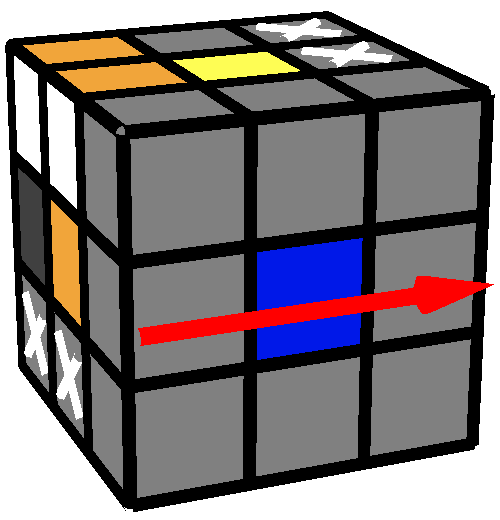
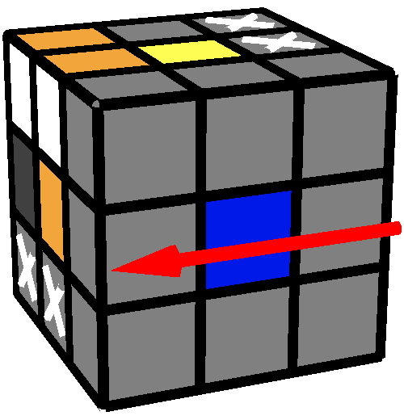
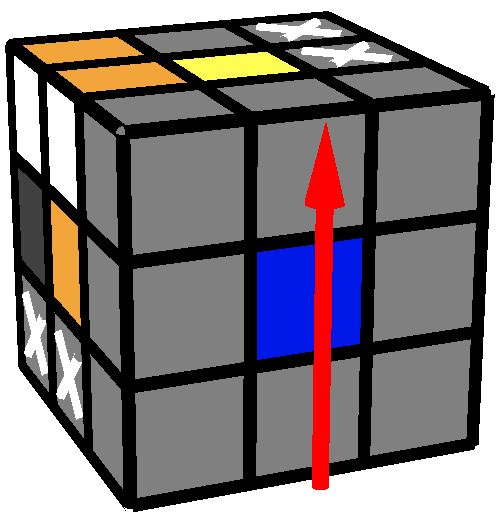
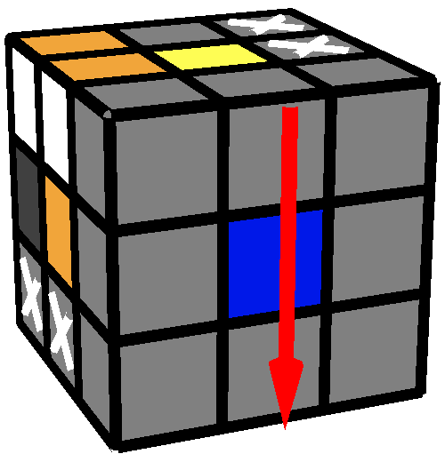

進入保留2個pairs的<R, U >
前言
這個步驟不但要在保留已完成的2個pair下組成完整無缺的2x2x3區塊，如下
其中
X
的部份為已做好的2個pair。
圖1
→
圖2
還要順便進入<R, U>
命名、判斷方式與分類
先將已做好的第2個pair及2x2x3久缺的pair轉到如同下圖，再觀察下圖有
X
的角塊
其中
X
的部份為已做好的2個pair
圖3
角塊名稱
上圖中有
X
的角塊部份給予名稱
有
面的角塊稱為紅角塊
有
面的角塊稱為綠角塊
有
面，但沒有
面的角塊稱為白角塊
相鄰角塊關係名稱
箭頭為B方向

箭頭為F方向

箭頭為U方向

箭頭為D方向

範例
範例1
左邊範例為
綠角塊在紅角塊的D方向
白角塊在紅角塊的B方向
進入<R, U>並完成2x2x3區塊
綠角塊與紅角塊相鄰
下面三個條件皆須符合
綠角塊在紅角塊的U方向，或綠角塊在紅角塊的D方向
若紅角塊的F方向有角塊，則必是白角塊
若紅角塊的B方向有角塊，則不是白角塊
使用轉動F' R' F U' R2 U F' R F
其中2個範例如下
範例2
範例3
綠角塊與紅角塊不相鄰
白角塊在紅角塊的逆時針方向
使用轉動F' R' F U' R2 U2 F' R F R' U'
其中一個範例如下
範例4
白角塊在紅角塊的順時針方向
使用轉動F' R' F U' R2 U F' R' F R U F' R F R' U'
其中一個範例如下
範例5
其他情形
只有綠角塊與紅角塊相鄰時會具有上面沒包括的其他情形，使用R面旋轉就可以調到上面的狀況
其中一個範例如下
範例6
左邊範例為綠角塊與紅角塊相鄰，但綠角塊不在紅角塊的U或D方向，所以可使用R面旋轉來調整
第1轉為R面旋轉調至綠角塊在紅角塊的D方向，且白角塊不在紅角塊的B方向
第2~10轉為進入<R, U>的轉動
下一步：
完成第3個pair
總目錄
魔術方塊的RUPM, PRUM解法
由
吳宗諺
製作，以
創用CC 姓名標示-非商業性-禁止改作 3.0 台灣 授權條款
釋出。